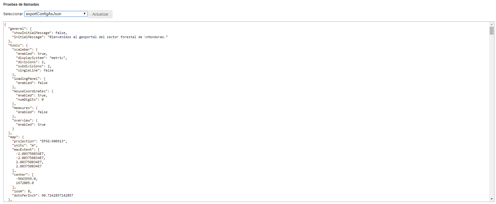

Permite de hacer pruebas de funcionamiento.
Se trata de una página muy técnica que permite verificar si el Geoportal contesta correctamente a unas solicitudes específicas. Esta página es útil para los desarrolladores y para el debug de la aplicación.

Página de pruebas de solicitudes